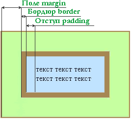

Глава 8
Поля и отступы.
В этой главе мы поговорим о полях (свойство margin) и отступах (свойство padding) элемента. Между собой эти два свойства весьма схожи, однако все же это два абсолютно разных свойства.

Давайте разберемся в этих понятиях..
Поле (margin) - Это расстояние от внешней границы элемента до границы окна браузера или же элемента родителя.. ну границы того блока в который вложен наш элемент.
Отступом (padding) - Называют расстояние от внутренней границы элемента до его содержания текста, картинок таблиц..
На рисунке наглядно показаны эти расстояния, а так же место занимаемое бордюром (border) про него тоже не следует забывать.
Расстояния margin и padding указываются:
- px - В пикселях или любых других допустимых CSS единицах измерения.
- % - В процентах.
- auto - Размер полей и отступов автоматически рассчитывается браузером.
Давайте попробуем сделать тоже самое, что показано на рисунке с помощью блоков <div> и свойств CSS.
Пример:
<!DOCTYPE HTML PUBLIC "-//W3C//DTD HTML 4.01 Transitional//EN" "http://www.w3.org/TR/html4/loose.dtd">
<html>
<head>
<title>Поля и отступы</title>
<style type="text/css">
div.block1 {
width: 260px;
background-color: #c5ffa0;
border: 2px solid #a68754
}
div.block2 {
background-color: #c0e4ff;
border: 8px solid #a68754;
margin: 40px;
padding: 20px
}
</style>
</head>
<body>
<div class="block1">
<div class="block2">
<samp>Осмысливая мысли в смысле смысла, есть смысл помыслить о немыслимом!</samp>
</div>
</div>
</body>
</html>
Попробуйте поменять значения свойств margin и padding и Вы поймете, что к чему.. а если и так понятно идем дальше..
Возможные значения margin и padding.
В примере выше присудив свойствам margin и padding по одному значению, мы определили поля и отступы элемента со всех четырех его сторон. Для того чтобы указать разные размеры полей и отступов для каждой из сторон элемента, необходимо указывать два, три или четыре аргумента через пробел. Причем в зависимости от количества значений результат будет разным.
Вот примеры:
margin: 5px; - одно значение.
Одно значение - Поля одинаковые со всех сторон.
margin: 5px 40px; - два значения.
Первое значение - Устанавливает поля от верхней и нижней границ.
Второе значение - Устанавливает поля от левой и правой границ элемента.
margin: 5px 40px 20px; - три значения.
Первое значение - Устанавливает поле от верхней границы элемента.
Второе значение - Устанавливает поля от левой и правой границ элемента.
Третье значение - Устанавливает поле от нижней границы элемента.
margin: 5px 40px 20px 1px; - четыре значения.
Первое значение - Устанавливает поле от верхней границы элемента.
Второе значение - Устанавливает поле от правой границы элемента.
Третье значение - Устанавливает поле от нижней границы элемента.
Четвёртое значение - Устанавливает поле от левой границы элемента.
С padding дело происходит по тому же принципу, как и с margin, отступы от внутренних границ элемента до содержания приобретают размеры в зависимости от количества аргументов и их значений.
Пример:
<!DOCTYPE HTML PUBLIC "-//W3C//DTD HTML 4.01 Transitional//EN" "http://www.w3.org/TR/html4/loose.dtd">
<html>
<head>
<title>Поля и отступы</title>
<style type="text/css">
div.block1 {
width: 260px;
background-color: #c5ffa0;
border: 2px solid #a68754
}
div.block2 {
background-color: #c0e4ff;
border: 2px solid #a68754;
margin: 20px 5px 20px 40px;
padding: 5px 25px
}
</style>
</head>
<body>
<div class="block1">
<div class="block2">
<samp>Осмысливая мысли в смысле смысла, есть смысл помыслить о немыслимом!</samp>
</div>
<div class="block2">
<samp>Мало кто знает, как много надо знать, для того чтобы знать, как мало мы знаем!</samp>
</div>
</div>
</body>
</html>
Дочерние свойства margin и padding.
Свойства CSS margin и padding являются базовыми и имеют ряд дочерних свойств.
У margin зто:
- margin-top - Поле от верхней границы элемента родителя,
- margin-left - Поле от левой границы элемента родителя,
- margin-right - Поле от правой границы элемента родителя,
- margin-bottom - Поле от нижней границы элемента родителя.
И у padding соответственно:
- padding-top - Отступ от верхней границы элемента до его содержания,
- padding-left - Отступ от левой границы элемента до его содержания,
- padding-right - Отступ от правой границы элемента до его содержания,
- padding-bottom - Отступ от нижней границы элемента до его содержания.
Ну думаю понятно.. если возникает необходимость определить отступ или поле от одной единственной стороны элемента лучше воспользоваться одним из вышеперечисленных свойств.
Пример:
<!DOCTYPE HTML PUBLIC "-//W3C//DTD HTML 4.01 Transitional//EN" "http://www.w3.org/TR/html4/loose.dtd">
<html>
<head>
<title>Поля и отступы</title>
</head>
<body>
<div style="width: 250px; background-color: #c5ffa0; border: 2px solid #a68754">
<div style="background-color: #c0e4ff; border: 2px solid #a68754; margin-left:40px; padding-right: 50px">
<samp>Осмысливая мысли в смысле смысла, есть смысл помыслить о немыслимом!</samp>
</div>
<br>
<div style="background-color: #c0e4ff; border: 2px solid #a68754; margin-right:40px; padding-left: 50px">
<samp>Мало кто знает, как много надо знать, для того чтобы знать, как мало мы знаем!</samp>
</div>
</div>
</body>
</html>
Полезные советы:
Поля и отступы являются одними из основных составляющих дизайна сайта, по этому поводу следует придерживаться нескольких рекомендаций.
Избегайте коротких, и уж тем более, нулевых отступов от содержимого к границам элемента, особенно это касается текстовых блоков. Текст с маленькими полями и отступами читается трудно и "вязко".
Соблюдайте правила пропорциональности и соизмеримости полей и отступов как для отдельно взятого элемента, так и для всей страницы (композиции элементов) целиком.
Один из способов акцентирования внимания посетителя страницы на нужном Вам месте - это отступы размером больше обычного, такой контраст заставит зрителя смотреть и проявить внимание к "особым" местам в тексте..